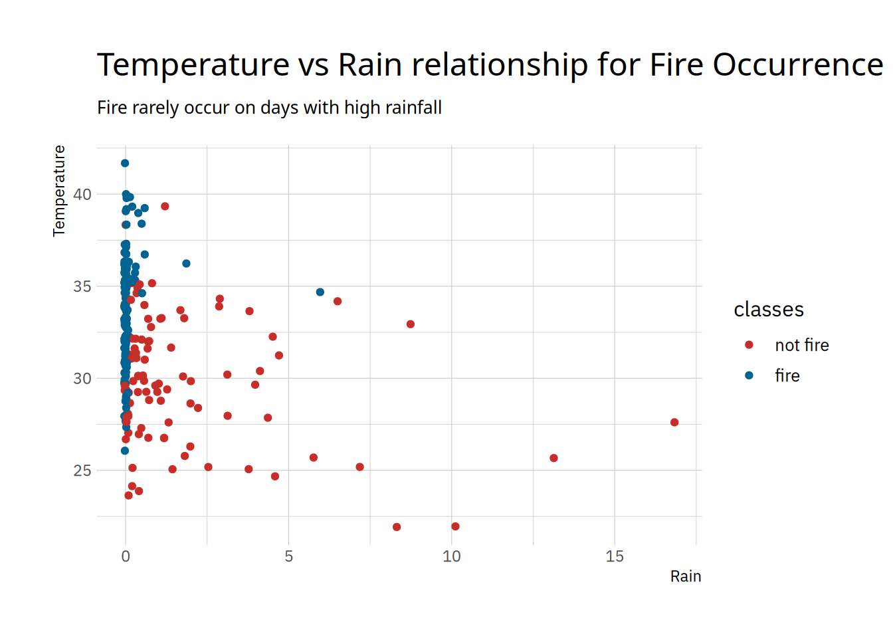

Show the code
library(pacman)
p_load(tidyverse, tidymodels, knitr, ggthemes, hrbrthemes)
theme_set(theme_ipsum_ps(base_size = 12))August 4, 2024
According to the World Bank, Algeria’s forest is about 0.82% of the total country’s land mass in 2021 (tradingeconomics.com). Algeria is one of the Maghreb countries affected by wildfire. Given the troubles associated with wildfire, it is important to assess and predict the potential for wildfire activity. One of the ways to predict the potential for wildfire is associating its occurrence with weather conditions. This is called the Fire Weather Index (FWI). FWI was developed by the Canadian Forest Service and it is a key component of the Canadian Forest Fire Weather Index System. FWI is also used internationally to assess fire danger and predict wildfire behavior based on weather conditions.
For this project, I will predict the occurrence of fire (fire or nor fire) given a set of parameters related to FWI in two regions of Algeria, the Bejaia region located in the northeast of Algeria and Sidi Bel-abbes region located in the northwest of Algeria.
The data for this analysis is collected from UCI machine learning data repository and provided by (Abid and Izeboudjen 2020). The variables include:
| Variable name | Data type | Definition |
|---|---|---|
| region | categorical | area in Algeria, either of Sidi Bel-abbes or Bejaia |
| day | date | the day in number |
| month | date | month of the year, from June to September |
| year | date | single year of when data as observed |
| temp | numeric | max noon temperature in \(^{\circ}C\) |
| rh | numeric | relative humidity in percentage |
| ws | numeric | wind speed in km/h |
| rain | numeric | total rain in a day in mm |
| ffmc | numeric | fine fuel moisture code |
| dmc | numeric | Duff moisture code |
| dc | numeric | drought code |
| isi | numeric | Initial spread index |
| bui | numeric | buildup index |
| fwi | numeric | fire weather index |
| classes | binary | class of fire occurrence. This is the target variable |
To get started I load all necessary packages. Tidyverse for all forms of data manipulation, visualization and data importation and tidymodels for our model workflow.
I like using the pacman package instead of using base R’s library() function because it simplifies library management and integration. Another packagem management system is pkgdown.
Next I import the data
Warning: One or more parsing issues, call `problems()` on your data frame for details,
e.g.:
dat <- vroom(...)
problems(dat)Rows: 246 Columns: 14
── Column specification ────────────────────────────────────────────────────────
Delimiter: ","
chr (14): day, month, year, Temperature, RH, Ws, Rain, FFMC, DMC, DC, ISI, B...
ℹ Use `spec()` to retrieve the full column specification for this data.
ℹ Specify the column types or set `show_col_types = FALSE` to quiet this message.After importing the data, I need to investigate if the data is imported as expected, and confirm that all data types are as expected.
A quick preview of the data is the first step:
| day | month | year | temperature | rh | ws | rain | ffmc | dmc | dc | isi | bui | fwi | classes |
|---|---|---|---|---|---|---|---|---|---|---|---|---|---|
| 01 | 06 | 2012 | 29 | 57 | 18 | 0 | 65.7 | 3.4 | 7.6 | 1.3 | 3.4 | 0.5 | not fire |
| 02 | 06 | 2012 | 29 | 61 | 13 | 1.3 | 64.4 | 4.1 | 7.6 | 1 | 3.9 | 0.4 | not fire |
| 03 | 06 | 2012 | 26 | 82 | 22 | 13.1 | 47.1 | 2.5 | 7.1 | 0.3 | 2.7 | 0.1 | not fire |
| 04 | 06 | 2012 | 25 | 89 | 13 | 2.5 | 28.6 | 1.3 | 6.9 | 0 | 1.7 | 0 | not fire |
| 05 | 06 | 2012 | 27 | 77 | 16 | 0 | 64.8 | 3 | 14.2 | 1.2 | 3.9 | 0.5 | not fire |
| 06 | 06 | 2012 | 31 | 67 | 14 | 0 | 82.6 | 5.8 | 22.2 | 3.1 | 7 | 2.5 | fire |
| day | month | year | temperature | rh | ws | rain | ffmc | dmc | dc | isi | bui | fwi | classes |
|---|---|---|---|---|---|---|---|---|---|---|---|---|---|
| 25 | 09 | 2012 | 28 | 70 | 15 | 0 | 79.9 | 13.8 | 36.1 | 2.4 | 14.1 | 3 | not fire |
| 26 | 09 | 2012 | 30 | 65 | 14 | 0 | 85.4 | 16 | 44.5 | 4.5 | 16.9 | 6.5 | fire |
| 27 | 09 | 2012 | 28 | 87 | 15 | 4.4 | 41.1 | 6.5 | 8 | 0.1 | 6.2 | 0 | not fire |
| 28 | 09 | 2012 | 27 | 87 | 29 | 0.5 | 45.9 | 3.5 | 7.9 | 0.4 | 3.4 | 0.2 | not fire |
| 29 | 09 | 2012 | 24 | 54 | 18 | 0.1 | 79.7 | 4.3 | 15.2 | 1.7 | 5.1 | 0.7 | not fire |
| 30 | 09 | 2012 | 24 | 64 | 15 | 0.2 | 67.3 | 3.8 | 16.5 | 1.2 | 4.8 | 0.5 | not fire |
| day | month | year | temperature | rh | ws | rain | ffmc | dmc | dc | isi | bui | fwi | classes |
|---|---|---|---|---|---|---|---|---|---|---|---|---|---|
| 07 | 06 | 2012 | 33 | 54 | 13 | 0 | 88.2 | 9.9 | 30.5 | 6.4 | 10.9 | 7.2 | fire |
| 29 | 06 | 2012 | 32 | 47 | 13 | 0.3 | 79.9 | 18.4 | 84.4 | 2.2 | 23.8 | 3.9 | not fire |
| 03 | 08 | 2012 | 35 | 63 | 14 | 0.3 | 76.6 | 5.7 | 10 | 1.7 | 5.5 | 0.8 | not fire |
| 17 | 08 | 2012 | 37 | 52 | 18 | 0 | 89.3 | 16 | 100.7 | 9.7 | 22.9 | 14.6 | fire |
| 26 | 08 | 2012 | 31 | 78 | 18 | 0 | 85.8 | 45.6 | 190.6 | 4.7 | 57.1 | 13.7 | fire |
| 03 | 09 | 2012 | 25 | 78 | 15 | 3.8 | 42.6 | 1.2 | 7.5 | 0.1 | 1.7 | 0 | not fire |
| 05 | 08 | 2012 | 34 | 42 | 17 | 0.1 | 88.3 | 23.6 | 52.5 | 19 | 23.5 | 12.6 | fire |
| 21 | 08 | 2012 | 36 | 71 | 15 | 0 | 86 | 36.9 | 117.1 | 5.1 | 41.3 | 12.2 | fire |
| 27 | 08 | 2012 | 36 | 54 | 14 | 0 | 91 | 65.9 | 177.3 | 10 | 68 | 26.1 | fire |
| 29 | 08 | 2012 | 35 | 53 | 17 | 0.5 | 80.2 | 20.7 | 149.2 | 2.7 | 30.6 | 5.9 | fire |
Table 1 shows the first six observations, Table 1 (a), the last six observations, Table 1 (b), and 10 random observations from the data, Table 1 (c).
From Table 2, all the variables are character when they should be majorly numeric and one or two categorical variable. I can also see that the regions are not indicated in the data. The variables present are day, month, year, temperature, rh, ws, rain, ffmc, dmc, dc, isi, bui, fwi, classes.
| Name | algeria_ff |
| Number of rows | 246 |
| Number of columns | 14 |
| _______________________ | |
| Column type frequency: | |
| character | 14 |
| ________________________ | |
| Group variables | None |
Variable type: character
| skim_variable | n_missing | complete_rate | min | max | empty | n_unique | whitespace |
|---|---|---|---|---|---|---|---|
| day | 0 | 1.00 | 2 | 29 | 0 | 33 | 0 |
| month | 1 | 1.00 | 2 | 5 | 0 | 5 | 0 |
| year | 1 | 1.00 | 4 | 4 | 0 | 2 | 0 |
| temperature | 1 | 1.00 | 2 | 11 | 0 | 20 | 0 |
| rh | 1 | 1.00 | 2 | 2 | 0 | 63 | 0 |
| ws | 1 | 1.00 | 1 | 2 | 0 | 19 | 0 |
| rain | 1 | 1.00 | 1 | 4 | 0 | 40 | 0 |
| ffmc | 1 | 1.00 | 2 | 4 | 0 | 174 | 0 |
| dmc | 1 | 1.00 | 1 | 4 | 0 | 167 | 0 |
| dc | 1 | 1.00 | 1 | 6 | 0 | 199 | 0 |
| isi | 1 | 1.00 | 1 | 4 | 0 | 107 | 0 |
| bui | 1 | 1.00 | 1 | 4 | 0 | 175 | 0 |
| fwi | 1 | 1.00 | 1 | 4 | 0 | 127 | 0 |
| classes | 2 | 0.99 | 4 | 8 | 0 | 3 | 0 |
There’s a maximum of two missing data, which is in the classes variable, Table 2 (b). I will investigate this:
| day | month | year | temperature | rh | ws | rain | ffmc | dmc | dc | isi | bui | fwi | classes |
|---|---|---|---|---|---|---|---|---|---|---|---|---|---|
| Sidi-Bel Abbes Region Dataset | NA | NA | NA | NA | NA | NA | NA | NA | NA | NA | NA | NA | NA |
| 14 | 07 | 2012 | 37 | 37 | 18 | 0.2 | 88.9 | 12.9 | 14.6 9 | 12.5 | 10.4 | fire | NA |
There’s an interesting finding in Table 3. The start of Sidi-Bel Abbes region dataset can be seen under the day variable. I will add row numbers and a new column called region and add each region according to the row number where Sidi-Bel Abbes appears in the variable day. All data before Sidi-Bel Abbes are Bejaia region data,
| id | day | month | year | temperature | rh | ws | rain | ffmc | dmc | dc | isi | bui | fwi | classes |
|---|---|---|---|---|---|---|---|---|---|---|---|---|---|---|
| 1 | 01 | 06 | 2012 | 29 | 57 | 18 | 0 | 65.7 | 3.4 | 7.6 | 1.3 | 3.4 | 0.5 | not fire |
| 2 | 02 | 06 | 2012 | 29 | 61 | 13 | 1.3 | 64.4 | 4.1 | 7.6 | 1 | 3.9 | 0.4 | not fire |
| 3 | 03 | 06 | 2012 | 26 | 82 | 22 | 13.1 | 47.1 | 2.5 | 7.1 | 0.3 | 2.7 | 0.1 | not fire |
| 4 | 04 | 06 | 2012 | 25 | 89 | 13 | 2.5 | 28.6 | 1.3 | 6.9 | 0 | 1.7 | 0 | not fire |
| 5 | 05 | 06 | 2012 | 27 | 77 | 16 | 0 | 64.8 | 3 | 14.2 | 1.2 | 3.9 | 0.5 | not fire |
| 6 | 06 | 06 | 2012 | 31 | 67 | 14 | 0 | 82.6 | 5.8 | 22.2 | 3.1 | 7 | 2.5 | fire |
I will perform the previous filter operation in Table 3 to get the start of the row number for Sidi-Bel Abbes Region.
# A tibble: 2 × 15
id day month year temperature rh ws rain ffmc dmc dc isi
<int> <chr> <chr> <chr> <chr> <chr> <chr> <chr> <chr> <chr> <chr> <chr>
1 123 Sidi-… <NA> <NA> <NA> <NA> <NA> <NA> <NA> <NA> <NA> <NA>
2 168 14 07 2012 37 37 18 0.2 88.9 12.9 14.6… 12.5
# ℹ 3 more variables: bui <chr>, fwi <chr>, classes <chr>Sidi-Bel Abbes data starts from 124, Table 5. I will add the regions and remove the id variable that contains the row numbers. The number of observations for each region can be seen in Table 6
# A tibble: 6 × 15
region day month year temperature rh ws rain ffmc dmc dc isi
<chr> <chr> <chr> <chr> <chr> <chr> <chr> <chr> <chr> <chr> <chr> <chr>
1 Bejaia 01 06 2012 29 57 18 0 65.7 3.4 7.6 1.3
2 Bejaia 02 06 2012 29 61 13 1.3 64.4 4.1 7.6 1
3 Bejaia 03 06 2012 26 82 22 13.1 47.1 2.5 7.1 0.3
4 Bejaia 04 06 2012 25 89 13 2.5 28.6 1.3 6.9 0
5 Bejaia 05 06 2012 27 77 16 0 64.8 3 14.2 1.2
6 Bejaia 06 06 2012 31 67 14 0 82.6 5.8 22.2 3.1
# ℹ 3 more variables: bui <chr>, fwi <chr>, classes <chr>Now we can check for missing data again
| region | day | month | year | temperature | rh | ws | rain | ffmc | dmc | dc | isi | bui | fwi | classes |
|---|---|---|---|---|---|---|---|---|---|---|---|---|---|---|
| Sidi-Bel Abbes | Sidi-Bel Abbes Region Dataset | NA | NA | NA | NA | NA | NA | NA | NA | NA | NA | NA | NA | NA |
| Sidi-Bel Abbes | 14 | 07 | 2012 | 37 | 37 | 18 | 0.2 | 88.9 | 12.9 | 14.6 9 | 12.5 | 10.4 | fire | NA |
The missing points are still the same. Here, I will remove this data points and proceed with the analysis.
I also need to change the other variables to numeric data types except region and classes which will be changed to factor variable type.
tibble [243 × 15] (S3: tbl_df/tbl/data.frame)
$ region : Factor w/ 2 levels "Bejaia","Sidi-Bel Abbes": 1 1 1 1 1 1 1 1 1 1 ...
$ day : num [1:243] 1 2 3 4 5 6 7 8 9 10 ...
$ month : num [1:243] 6 6 6 6 6 6 6 6 6 6 ...
$ year : num [1:243] 2012 2012 2012 2012 2012 ...
$ temperature: num [1:243] 29 29 26 25 27 31 33 30 25 28 ...
$ rh : num [1:243] 57 61 82 89 77 67 54 73 88 79 ...
$ ws : num [1:243] 18 13 22 13 16 14 13 15 13 12 ...
$ rain : num [1:243] 0 1.3 13.1 2.5 0 0 0 0 0.2 0 ...
$ ffmc : num [1:243] 65.7 64.4 47.1 28.6 64.8 82.6 88.2 86.6 52.9 73.2 ...
$ dmc : num [1:243] 3.4 4.1 2.5 1.3 3 5.8 9.9 12.1 7.9 9.5 ...
$ dc : num [1:243] 7.6 7.6 7.1 6.9 14.2 22.2 30.5 38.3 38.8 46.3 ...
$ isi : num [1:243] 1.3 1 0.3 0 1.2 3.1 6.4 5.6 0.4 1.3 ...
$ bui : num [1:243] 3.4 3.9 2.7 1.7 3.9 7 10.9 13.5 10.5 12.6 ...
$ fwi : num [1:243] 0.5 0.4 0.1 0 0.5 2.5 7.2 7.1 0.3 0.9 ...
$ classes : Factor w/ 2 levels "not fire","fire": 1 1 1 1 1 2 2 2 1 1 ...Let’s do some exploratory data analysis to understand our target variable, predictors, and the relationship between them. ## Target Variable
algerian_ff |>
count(classes) |>
ggplot(aes(classes, n, fill = classes)) +
geom_bar(stat = "identity") +
geom_text(
aes(label = n),
nudge_y = 11.5,
size = 4,
col = "#ff3000"
) +
scale_fill_colorblind() +
labs(
x = "Classes",
y = "Count",
title = "Frequency of Fire Occurrence Situation"
) +
coord_cartesian(ylim = c(0, 145)) +
scale_y_continuous(breaks = seq(0, 145, 29)) +
theme(
legend.position = "none",
plot.title = element_text(hjust = .5)
)Figure 1 shows there are more occurrence of fire than not fire.
As show in Figure 2, rain, ws, dmc, dc, isi, bui and fwi are rightly skewed, temperature and rh are normally distributed, while ffmc is left-skewed. There’s also high correlation between some of the variables.
algerian_ff |>
summarize(
.by = c(classes, region),
count = n()
) |>
ggplot(aes(region, count, fill = fct_reorder(classes, count))) +
geom_col(position = "dodge") +
geom_text(
aes(label = count),
size = 3.2,
vjust = -.2,
position = position_dodge(width = 1)
# position = position_nudge(x = 0, y =1)
) +
scale_fill_calc() +
labs(
fill = "Region",
x = "Classes",
y = "Count",
title = "Frequency of Fire Occurrence Situation Across Regions",
subtitle = "There's more fire outbreak in Sidi-Bel Abbes than in Bejaia"
) algerian_ff |>
ggplot(aes(rain, temperature, col = classes)) +
geom_jitter() +
scale_color_wsj() +
labs(
x = "Rain",
y = "Temperature",
title = "Temperature vs Rain relationship for Fire Occurrence",
subtitle = "Fire rarely occur on days with high rainfall"
) +
theme(plot.subtitle = element_text(size = 10))
algerian_ff |>
ggplot(aes(day, rh, colour = classes)) +
geom_point() +
labs(
x = "Day",
y = "Relative Humidity (%)",
title = "Fire occurence for each days in a month given the day's humidity"
) +
facet_wrap(~month)
algerian_ff |>
ggplot(aes(day, rh, colour = classes)) +
geom_point() +
labs(
x = "Day",
y = "Relative Humidity (%)",
title = "Fire occurence for each days in a month for a region given the day's humidity"
) +
facet_grid(region~month)Figure 4 (a) shows no clear pattern in fire occurrence, but it is visible that the 8th month had more fire occurring from its 10th day to the 27th day. Fire occurred more in days with low relative humidity compared to those with high humidity. Figure 4 (b) shows how month 8 had fire occuring the most, even at high relative humidity.
As introduced earlier, the model algorithm I will be using for this binary classification is logistic regression. The modeling worklow will go as thus:
Let’s split the data into two portions. The training data will be 70% of the whole data while the test data will be 30%.
# A tibble: 4 × 3
region classes n
<fct> <fct> <int>
1 Bejaia not fire 41
2 Bejaia fire 48
3 Sidi-Bel Abbes not fire 32
4 Sidi-Bel Abbes fire 49Table 7 shows how the data is distributed in the training data.
Next we create the model specification
Logistic Regression Model Specification (classification)
Computational engine: glm
Model fit template:
stats::glm(formula = missing_arg(), data = missing_arg(), weights = missing_arg(),
family = stats::binomial)For feature engineering, we will remove zero and near-zero variance variables. After, we’ll apply Yeo-Johnson to prevent to handle data values that have zero or negative values. After this, we standardize the results and make all factor variables one-hot coded.
── Recipe ──────────────────────────────────────────────────────────────────────── Inputs Number of variables by roleoutcome: 1
predictor: 14── Operations • Zero variance filter on: all_numeric_predictors()• Sparse, unbalanced variable filter on: all_numeric_predictors()• Yeo-Johnson transformation on: all_numeric_predictors()• Scaling for: all_numeric_predictors()• PCA extraction with: all_numeric_predictors()• Dummy variables from: regionTo see how the data looks after preprocessing let’s use the prep() and juice() function.
| classes | PC1 | PC2 | PC3 | PC4 | PC5 | region_Sidi.Bel.Abbes |
|---|---|---|---|---|---|---|
| fire | -12.75870 | 1.065189 | 1.9127196 | 0.1717558 | 1.5907799 | 1 |
| fire | -15.82715 | 3.592703 | -0.6338943 | -0.1082043 | 0.1228698 | 1 |
| fire | -13.60741 | 1.357303 | -0.8886342 | -0.0618020 | 0.1017522 | 1 |
| not fire | -11.74371 | -3.347725 | -1.0163208 | 1.2834374 | 1.1943557 | 0 |
| fire | -13.83764 | 1.683620 | 1.3037796 | 0.2674702 | 0.5054699 | 1 |
| fire | -14.13147 | 1.995548 | -0.6331457 | 0.3294726 | 0.1962187 | 1 |
From Table 8 we can see that the variable year has been removed.The variables has also been reduced as some of them were related, check Figure 2 ## Workflow
# A tibble: 7 × 5
term estimate std.error statistic p.value
<chr> <dbl> <dbl> <dbl> <dbl>
1 (Intercept) -8.40 7.01 -1.20 0.230
2 PC1 -0.758 0.538 -1.41 0.159
3 PC2 3.43 0.847 4.05 0.0000517
4 PC3 0.480 0.459 1.05 0.296
5 PC4 1.77 0.638 2.77 0.00558
6 PC5 -0.999 0.440 -2.27 0.0231
7 region_Sidi.Bel.Abbes 0.356 0.959 0.371 0.711 When all the factors are zero, the odds of fire occurring is very low, i.e. the exponential of the intercept estimate, 2.2380029^{-4}. For region Sidi-Bel Abbes, the odds of a fire outbreak is 1.5 times higher, ?@tbl-model-sum.
# A tibble: 1 × 3
.metric .estimator .estimate
<chr> <chr> <dbl>
1 accuracy binary 0.918The accuracy of the model is high at 92%.
# A tibble: 1 × 3
.metric .estimator .estimate
<chr> <chr> <dbl>
1 sensitivity binary 0.818The model is 82% sensitive.
# A tibble: 1 × 3
.metric .estimator .estimate
<chr> <chr> <dbl>
1 roc_auc binary 0.992The area under the curve is .99 which is very good Figure 5.
Truth
Prediction not fire fire
not fire 27 0
fire 6 40The model performance precision and accuracy is high above 90%, with precision at 100%. There are 6 false positives which signals the likelihood of fire when there is supposed to be non.
The project seek to predict the likelihood of fire outbreak in two regions of Algeria. A logistic regression model was employed with 6 preprocessing steps. The model developed was evaluated and has high accuracy at 92%, a high precision of 100%, 0.99 for roc_auc